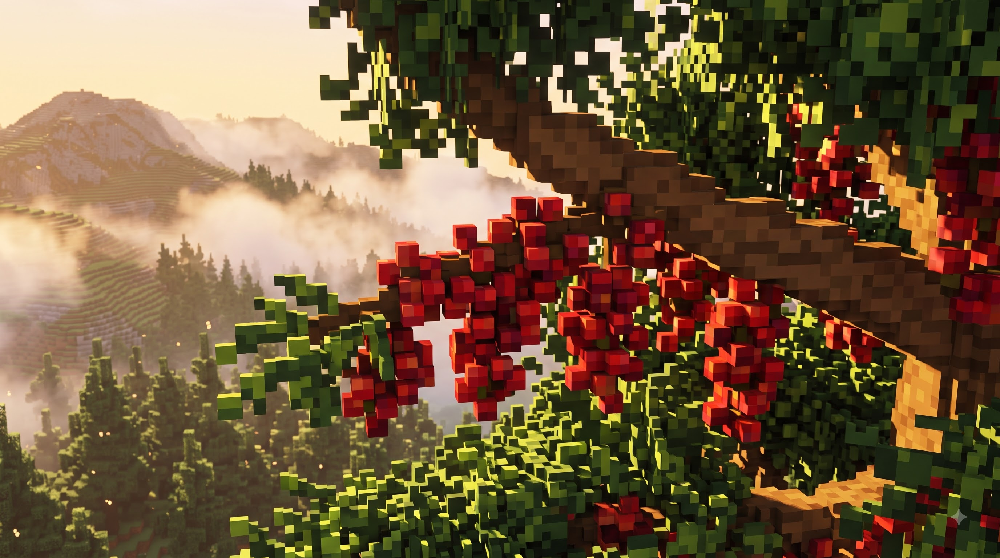

VOXEL BREW
[Placeholder] From a single block of soil to the cup in your hands.
[Placeholder] Everything starts in the dark.
[Placeholder] One sprout, one block of soil, one shaft of light. This is where the story — and the flavor — begins.
Placeholder copy — Stage 5
[Placeholder] Picked at dawn, at altitude.
[Placeholder] Red cherries, cool mountain air, hands that know exactly when. Patience you can taste.
Placeholder copy — Stage 5[Placeholder] Roasted like it matters.
[Placeholder] Small batches, watched closely. The roast is where the farm becomes flavor.
Placeholder copy — Stage 5[Placeholder] The pour is the payoff.
[Placeholder] Hot, slow, deliberate. Every block of the journey ends here.
Placeholder copy — Stage 5